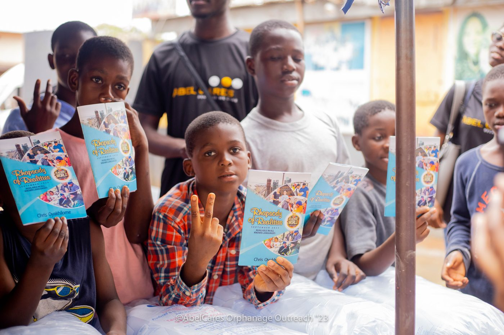

Primary Classroom Initiatives
Transforming Teacher Empathy in Early Education
In many under-resourced public and community schools, children with sensory processing differences, ADHD, or autism are labeled "troublemakers" or excluded from learning circles.
Our field teams introduce structured, low-cost accommodations: sensory pause corners, visual schedule aids, and peer-buddy circles.
"For the first time, teachers understood that a child struggling with eye contact was not being disrespectful, but was processing sound differently."Field Assessment Report • Primary School Workshop